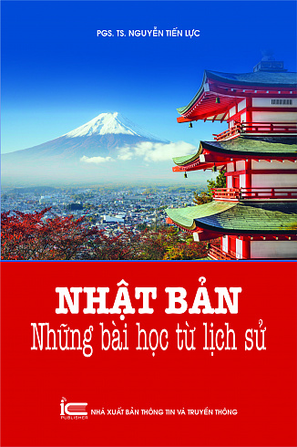

Nhật Bản - Bài học từ lịch sử
Tác giả: PGS.TS Nguyễn Tiến Lực
Nhà xuất bản: Thông tin & Truyền thông
Năm xuất bản: 2018
Kích thước: 14,5x20,5 (cm)
Số trang: 396
Giới thiệu sách
Chiều dài lịch sử Nhật Bản chứa đựng biết bao điều kỳ diệu khi từ một đất nước lạc hậu
hơn so với khu vực vào thời cổ đại, cho đến ngày nay, đã trở thành một cường quốc, đạt đến trình độ
của các quốc gia văn minh nhất. Sau khi tiếp nhận những tinh hoa của văn minh Trung Hoa bằng chính
sách Khiển Đường sứ, vào thời trung đại, lúc đại thương thuyền phương Tây rầm rập kéo đến phương
Đông buôn bán, người Nhật nhanh chóng tiếp thu thành tựu hàng hải của họ tạo nên thời kỳ Mậu dịch
Châu ấn thuyền nổi tiếng. Sau đó, dù tham gia vào xu thế chung của các nước phương Đông thực thi
chính sách đóng cửa nhưng Nhật Bản cũng tạo được sự khác biệt với các nước láng giềng bởi chính sách
sakoku (đóng cửa nhưng không khép kín) đặc sắc. Chính chính sách này làm cho Nhật Bản không bị lạc
hậu so với thế giới để từ đó lựa chọn con đường đi riêng trong đối sách với các nước phương Tây: mở
cửa, duy tân, làm nên điều kỳ diệu trong thời Minh Trị. Vào thời Minh Trị, Nhật Bản tạo ra những bài
học quý giá, có giá trị đến tận ngày nay thông qua các chính sách cử phái đoàn đi thị sát các nước
văn minh, cử người đi nước ngoài học, mời chuyên gia nước ngoài đến Nhật làm việc để học cái hay
nhất, cái tốt nhất của nhân loại, áp dụng ngay vào công cuộc duy tân và mang đến thành công rực rỡ.
Sau Chiến tranh thế giới thứ II, Nhật Bản phải chịu thất bại thảm hại. Từ đống tro tàn chiến tranh,
người Nhật vươn dậy làm nên những điều thần kỳ khác, trở thành một quốc gia giàu có, văn minh, được
toàn thế giới khâm phục, ngưỡng mộ. Sự phát triển thần kỳ khiến người ta ngỡ ngàng, khâm phục của xứ
sở Mặt trời mọc ấy được tái hiện dưới cái nhìn đầy học thuật của PGS.TS Nguyễn Tiến Lực trong “Nhật
Bản – Những bài học từ lịch sử”. “Nhật Bản – Những bài học từ lịch sử” có thể nói là một bức tranh
phác họa chi tiết các sự kiện, hiện tượng cụ thể trong suốt tiến trình lịch sử Nhật Bản và từ đó để
chúng tự nói lên chính giá trị lịch sử của mình.